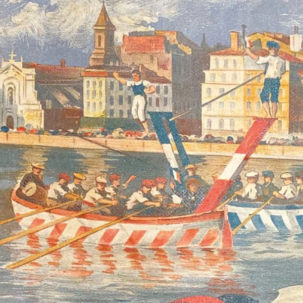

Nouveau : un marché alimentaire sur le Vieux-Port chaque dimanche matin
Depuis le 12 novembre , la Ville de Marseille installe un nouveau marché alimentaire tous les dimanches matin de 8h à 13h sur le Vieux-Port.
La Ville de Marseille engagée pour la prévention des risques majeurs
Tout au long de l’année, la Ville de Marseille est engagée pour la sensibilisation et la prévention de la population face aux risques majeurs.

Exposition "La fabrique de l'espoir" aux Archives de Marseille
Les Archives de Marseille proposent, du 16 septembre 2023 au 16 février 2024, l'exposition "La fabrique de l'espoir - Fêtes et réjouissances publiques à Marseille du XVIIe au XXe siècle". L'exposition est en entrée libre.
Rejoignez le Conseil marseillais de la vie étudiante, la Ville de Marseille vous donne la parole !
La Ville de Marseille souhaite porter une attention particulière aux politiques publiques à destination des étudiants, au degré de confiance mutuelle entre les jeunes et les pouvoirs publics et renouer les liens démocratiques. Elle décide donc de leur donner une place dans ses instances en créant un Conseil marseillais de la vie étudiante (CMVE).